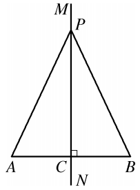
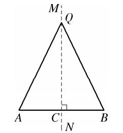
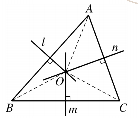
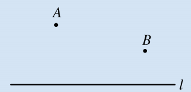
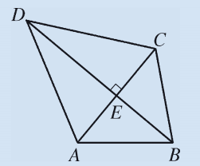
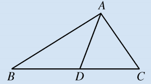

我们已经知道线段是轴对称图形，线段的垂直平分线是线段的对称轴。如图12.4.1，直线$MN$是线段$AB$的垂直平分线，点$P$是$MN$上任意一点，连结$PA$、$PB$。将线段$AB$沿直线$MN$对折，我们发现$PA$与$PB$完全重合。

由此我们得到线段垂直平分线的性质定理。
线段垂直平分线上的点到线段两端的距离相等。
已知：如图12.4.1，$MN \perp AB$，垂足为$C$，$AC = BC$，点$P$是直线$MN$上的任意一点。
求证：$PA = PB$。
证明： $\because MN \perp AB$，$\therefore \angle PCA = \angle PCB = 90^\circ$。
在$\triangle PCA$和$\triangle PCB$中，
$AC = BC$（已知），$\angle PCA = \angle PCB$（已证），$PC = PC$（公共边），
$\therefore \triangle PCA \cong \triangle PCB$（SAS）。$\therefore PA = PB$。
这一定理描述了线段垂直平分线的性质，那么反过来会有什么结果呢？
写出该性质定理的逆命题，想想看，其逆命题是否是一个真命题？
性质定理： 线段垂直平分线上的点到线段两端的距离相等。
逆命题： ________________________________________。
你能证明这个逆命题是真命题吗？下面给出两种证明方法（两种证法均可参考图12.4.3）。

已知：如图12.4.3，$QA = QB$。
求证：点$Q$在线段$AB$的垂直平分线上。
证明：过点$Q$作$QC \perp AB$，垂足为$C$。
在Rt$\triangle QCA$和Rt$\triangle QCB$中，
$QA = QB$（已知），$QC = QC$（公共边），
$\therefore$ Rt$\triangle QCA \cong$ Rt$\triangle QCB$（HL）。$\therefore AC = BC$。
又$QC \perp AB$，$\therefore$点$Q$在线段$AB$的垂直平分线上。
已知：如图12.4.3，$QA = QB$，设$AB$的中点为$C$，连结$QC$。
求证：$QC \perp AB$。
证明：在$\triangle QCA$和$\triangle QCB$中，
$QA = QB$（已知），$AC = BC$（中点定义），$QC = QC$（公共边），
$\therefore \triangle QCA \cong \triangle QCB$（SSS）。$\therefore \angle QCA = \angle QCB$。
又$\angle QCA + \angle QCB = 180^\circ$，$\therefore \angle QCA = \angle QCB = 90^\circ$。
故$QC \perp AB$，即点$Q$在线段$AB$的垂直平分线上。
到线段两端距离相等的点在线段的垂直平分线上。
于是，性质定理和判定定理互为逆定理。
📌 上述两条定理互为逆定理，根据上述两条定理，我们就能证明：三角形三边的垂直平分线交于一点！
如图12.4.4，要证明三角形三边的垂直平分线交于一点，只需证明其中两条边的垂直平分线的交点一定在第三条边的垂直平分线上。

设$\triangle ABC$中，边$AB$和$AC$的垂直平分线交于点$O$，则$OA = OB$，$OA = OC$，所以$OB = OC$。
因此点$O$也在$BC$的垂直平分线上。故三角形三边的垂直平分线交于一点。
试试看，你能独立写出完整的证明过程吗？



线段垂直平分线在实际生活中有着广泛的应用，下面再举几个例子：
这些应用都体现了数学知识从实践中来，又回到实践中去的思想。
• 转化思想： 将几何问题转化为全等三角形证明；
• 逆向思维： 性质与判定互逆，体会逻辑双向性；
• 归纳推理： 从特殊到一般，从实验操作到演绎证明；
• 模型思想： 垂直平分线是解决“到两点距离相等”问题的基本模型。